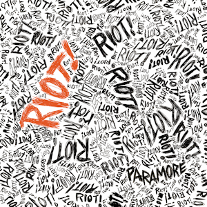

All We Know Is Falling

All We Know Is Falling is the debut studio album by the American rock band Paramore, released on July 26, 2005, under the Atlantic-distributed Fueled by Ramen in the United States. Its production was handled by James Paul Wisner, Mike Green, Nick Trevisick, and Roger Alan Nichols. The departure of bassist Jeremy Davis, which occurred a few days after arriving in Orlando, served as the album's main theme. This theme was reflected especially in the album's cover and title. Mostly categorized as a pop-punk album, the album received mostly positive reviews and has been labeled a "scene classic".[6]
Riot!
Riot! is the second studio album by the American rock band Paramore. It was released in the United States on June 12, 2007 through Fueled by Ramen as a follow-up to the band's debut album, All We Know Is Falling (2005). The album was produced by David Bendeth and written primarily by band members Hayley Williams and Josh Farro, with Bendeth. The album explores a "diverse range of styles," while not straying far from the "signature sound" of their debut album,[1] with several critics comparing it to the music of Kelly Clarkson and Avril Lavigne. The cover of the album also resembles the cover artwork of No Doubt's 2001 album Rock Steady.
Brand New Eyes

Brand New Eyes (stylized in all lowercase) is the third studio album by the American rock band Paramore, released on September 29, 2009, through Fueled by Ramen in the United States and Canada. The album was produced by Rob Cavallo and recorded in Hidden Hills, California from January to March 2009.[2] It was written by band members Hayley Williams and Josh Farro, with guitarist Taylor York who co-wrote on four tracks, as a follow-up to Riot! (2007).
Paramore

Paramore is the fourth studio album by the American rock band Paramore. It was released on April 5, 2013, through Fueled by Ramen as a follow-up to Brand New Eyes (2009). Recorded between April and November 2012, the album was described by the band as being a "statement" and a reintroduction of the band to the world and to themselves. It is the first album without guitarist Josh Farro, the only album without drummer Zac Farro and the final album with bassist Jeremy Davis before his departure in 2015.[2]
After Laughter

After Laughter is the fifth studio album by the American rock band Paramore. It was released on May 12, 2017, through Fueled by Ramen, as a follow-up to their 2013 self-titled album. After Laughter was produced by guitarist Taylor York alongside previous collaborator Justin Meldal-Johnsen. It is the band's first album since the return of drummer Zac Farro (who left the band with his brother Josh in 2010) and the departure of former bassist Jeremy Davis (who left the band in 2015).[1][2] After Laughter represents a complete departure from the pop-punk and alternative rock sound of the band's previous releases and, in direct contrast to its upbeat and vibrant sound, touches on themes of exhaustion, depression and anxiety.
This Is Why

This Is Why is the sixth studio album by the American rock band Paramore, released on February 10, 2023 through Atlantic Records, their final studio album for the label. It is their first album since 2017, following After Laughter, and is the band's second album to have that lineup (Hayley Williams, Taylor York, and Zac Farro).[1] The album was supported by four singles: "This Is Why", "The News", "C'est Comme Ça", and "Running Out of Time".